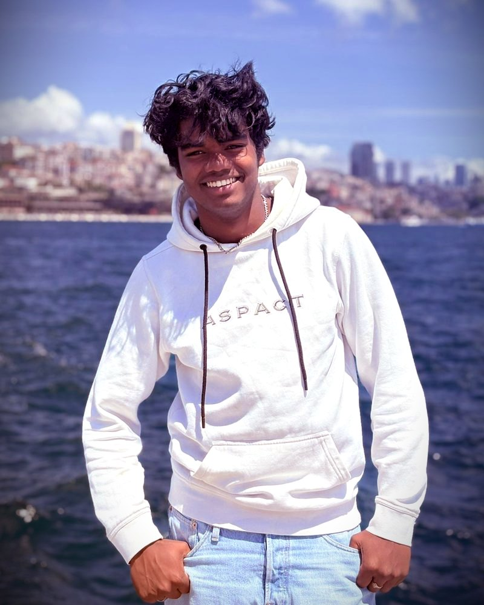

OVER ONS
We create emotions.
LUX Media is onderdeel van Deekman Enterprises, het bedrijf van Thomas Deekman, ondernemer sinds zijn zestiende. We maken fotografie en video voor mensen en merken: van shoots op locatie tot auto’s, producten en dronebeelden.
Sinds januari 2026 zijn we officieel een dochterbedrijf van Deekman Enterprises. LUX houdt haar eigen identiteit en creatieve stijl, met de structuur en slagkracht van Deekman Enterprises erachter.

Thomas DeekmanOPRICHTEROns verhaal
- 2025De eerste beeldenDronebeelden bij golden hour, gevolgd door de eerste opdrachten: een scootershoot en een showroom.
- Jan 2026Onderdeel van Deekman EnterprisesLUX Media wordt officieel een dochterbedrijf van Deekman Enterprises.
- 2026Shoots & auto’sFotoshoots met Floor Bartels en autoshoots in parkeergarages en op daken.
- New eraNieuw logoEen nieuwe huisstijl met het verloop van koraal naar paars, en onze belofte: we create emotions.
Waar we voor staan
01
Emotie eerst
We maken beelden die iets doen met de kijker, niet alleen mooi zijn.
02
Persoonlijk
Eén vast aanspreekpunt en korte lijnen, van de eerste vraag tot de oplevering.
03
Op tijd
Heldere planning vooraf, zodat je weet wanneer je wat krijgt.
Het team